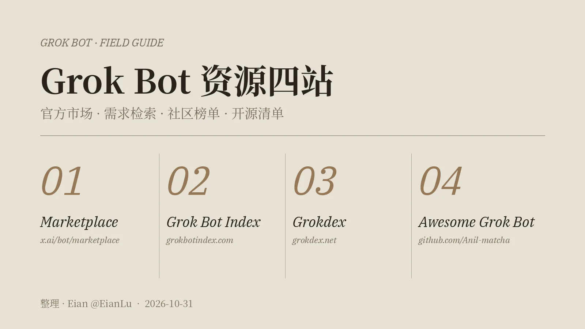

原帖（照录）
又来分享好东西了！Grok Bot实在是太好玩了。整理了一下关于grok bot的资源，发现除了官方那个模板市场，社区里还藏了很多宝藏站点，专门收录各种现成 Bot、好用的 Prompt 和自动化工作流。
整理了 4个最值得收藏的网站：1、Grok Bot Marketplace：官方根据地
🔗 x.ai/bot/marketplace
最建议先逛的肯定是它。官方按工程、销售、营销、设计、运营都分好类了。比如想搞 SEO、写代码、做 QA 测试或者挖销售线索，直接搜现成模板加进自己的工作流，省事又稳当。2、Grok Bot Index：描述需求就能搜
🔗 grokbotindex.com
收录了快 500 个公开模板，还连带着整理了 X 上的创作者。这个站我觉得最爽的一点是：你根本不需要知道 Bot 叫什么名字，直接搜你想干嘛（比如“监控网页”、“整理邮件”、“辅助写代码”），它就会把现成的方案吐给你，非常懂人话。3、Grokdex：看看大家都在玩什么
🔗 grokdex.net/templates
一个纯社区维护的热门排行榜，支持大家给模板点赞投票。平时不知道 Grok Bot 还能用来干啥、或者没灵感的时候，来这儿刷一圈，看看当下最火的 Bot 是哪几个，直接抄高赞的用。4、Awesome Grok Bot：硬核玩家抄作业专用
🔗 github.com/Anil-matcha/awesome-grok-bots
GitHub 上的开源项目，专门收集各种用途的 Grok Bot 模板。它最香的地方是能直接看别人的底层 Prompt 到底是怎么写的、各种参数怎么配的。想自己动手搓高级 Bot 的，直接扒这个项目的源码研究就行。大家最近有没有调教出特别趁手的 Grok Bot？或者你平时主要拿它来干嘛？评论区交流一下，碰碰灵感！
— Eian（@EianLu），2026-10-31。原帖中链接为 t.co 短链（每个链接在原帖里出现两次），此处还原为展开地址、各保留一次。第 4 个链接按原帖照录，但它目前打不开，见下文 ⚠️。
评论区与作者回复
- ReignSwords（2026-10-31 14:26 SGT）说最喜欢“按需求描述反向搜模板”的设计，“用 Bot 最大的成本从来不是建，而是根本想不到还能让它干嘛”；自己的用法是每天早上让 Bot 抓几条行业快讯拼成晨报。并问：Grokdex 的点赞排行榜，会不会有刷榜套利的空间？
- 作者回复（2026-10-31 16:32 SGT）：“这个不清楚勒”。
- Zerber（引用转发，14:28 SGT）：“我居然还不知道有这么方便的工具～ 天～！”
四个网站，逐站核对
下表是 2026-11-01 凌晨（SGT）逐一打开各站、读其首页与“关于”页的结果，数字会随时间变化。
| # | 网站 | 是谁在做 | 规模与排序 | 和帖子说法对照 |
|---|---|---|---|---|
| 01 | Grok Bot Marketplace | xAI 官方 | 首页分 Featured、From Grok Bot Team，以及 Engineering / Sales / Marketing / Design / Personal / Recruiting & People / Product / Operations 等栏目，每个模板写明作者，点 Add 复制到自己账户 | ✅ 分类与帖子一致；SEO（SEO & AEO Desk）、QA（QA bot）、销售线索（Outbound Prospecting）等例子都能在页面上找到 |
| 02 | Grok Bot Index | 个人站，运营者 @dcostaverage；自述“独立，与 xAI 无关” | 首页写“604 个公开模板、160 位 X 创作者，2026-10-30 核对”；来源是每日抓取的官方市场 + 作者提交或发在 X 上的分享链接，上架前人工审核；按“用途”分 16 类 | 帖子说“快 500 个”，现已 604 个（⚠️ 推断：是增长，而非作者写错）。首页搜索框“I want a Grok Bot that…”就是帖子说的“描述需求就能搜” |
| 03 | Grokdex | 独立站，自述“与 xAI 无关”；⚠️ 运营者未在首页署名 | 首页显示 104 个 Bot，按“净票数 + 添加点击”排序并随时间衰减，分 Product / Engineering / Marketing / Sales 等 11 类；投票、上架都免注册，站方不审核 | “社区排行榜、可投票”属实：任何人都能贴分享链接上架。⚠️ 但它也有付费 Featured / 加推位（已标注），“纯社区维护”的说法不完全准确 |
| 04 | Awesome Grok Bot | GitHub 用户 Anil-matcha | 仓库只有一个 README（约 134 KB），收 182 个模板：Productivity 40、Sales 26、Marketing 38、Ops 28、Success 12、Personal 38；42 星、8 个 fork；最后一次推送 2026-09-20 | ⚠️ 帖子里的链接 awesome-grok-bots（复数）返回 404，正确地址是单数 awesome-grok-bot。⚠️“看源码、参数怎么配”言过其实：没有代码，每条只有“集成 + 创作者 + 一段完整的设置提示词” |
01 · 官方 Marketplace：先从这里挑
官方市场的每个模板都是一段可以一键“Add”到自己账户的 Bot 设置，页面标出作者（如 Lauren Tan 的 dr eggbot、Lenny Rachitsky 的 Overheard、Claire Vo 的 Tradbot）。很多模板的描述里都写着类似“nothing sends without your yes”（不经你同意不会发送）的边界，这是官方模板的共同写法。帖子说它“省事又稳当”，理由也在这里：来源清楚、由官方挑选。
02 · Grok Bot Index：用一句话描述要做的事
首页只有一句“I want a Grok Bot that…”和一个输入框，正是帖子所说“不需要知道 Bot 叫什么名字”。“关于”页写明：官方市场的模板每天同步，外加作者自己提交或发在 X 上的 x.ai/bot 分享链接；每条新条目都人工审核；不显示评分，列表上的数字是本站上点“Add”的次数。
⚠️ 推广与利益相关：首页有“From the person who runs this site”一栏，展示站长 @dcostaverage 自己做的模板（站内已标明“because I built them, not because of ratings”）；“关于”页写着付费推荐位会标“Sponsored”，部分链接以后可能改为联盟链接（affiliate）。这些都已在站内披露，使用时留意即可。
03 · Grokdex：看大家在用什么
Grokdex 把公开的 Grok Bot 分享链接排成一张“热榜”，排序依据是投票和添加次数。它还提供让 Bot 自己“list me on Grokdex”的技能 / MCP 入口，并在 FAQ 中公开说明了供程序读取的目录接口与 llms.txt。站点脚注强调：在 x.ai 上添加一个 Bot，复制的只是模板，不包括原作者的电脑或登录状态。
⚠️ 关于刷榜：评论区问到“点赞排行榜会不会被刷”，作者答不清楚。Grokdex 的 FAQ（2026-09-23 更新）写明：默认的 Hot 排序综合“净票数（赞减踩）+ 添加点击数”，并随时间衰减；每个浏览器对每个 Bot 一票，不需要账号；“添加”计的是点击，不是实际安装；付费的 Featured / 加推位会单独标注，不改变自然排名。FAQ 也说明 Grokdex 不审核收录的 Bot。⚠️ 推断：不需要账号、按浏览器计票，门槛很低，排名可以当找灵感的入口，不宜当成质量背书。
04 · Awesome Grok Bot：直接读完整提示词
这是一个经典的 awesome-list：每个模板一个小标题，下面一行“Integrations / Creator”，再用引用块贴出整段设置提示词，大多以“Set up a new bot for me…”开头，写清楚要连哪些服务、问用户什么、哪些动作要先征得同意，最后“save it”。比如 Automation Scout（创作者 @ericzakariasson）的要求是先看你在 Slack、Notion、GitHub、Linear 的历史，自己找出两件可以自动化的重复工作再提方案。想学“怎么把一个 Bot 的边界写清楚”，这份清单确实值得读。
⚠️ 三点要知道：① 原帖链接 404，请用 github.com/Anil-matcha/awesome-grok-bot。② 许可不清：README 末尾写着“License: MIT”，但仓库没有 LICENSE 文件，而每条提示词又标注了其他创作者——维护者能否替这些创作者授权 MIT，存疑。因此本页不翻译、不转载这些提示词，只做导读。③ README 开头“Related Projects”推荐了维护者自己的 open-grok-bot 等项目，属于自我推广；仓库自 2026-09-20 起没有更新，收录量明显少于前两个站。
怎么用这四个站
- 知道要做什么：先去 Grok Bot Index 用一句话搜，命中官方模板就直接点进 x.ai 页面添加。
- 只想逛逛：官方 Marketplace 的 Featured / From Grok Bot Team 区挑得最严；Grokdex 的热榜看大家最近在加什么。
- 想自己写 Bot：读 Awesome Grok Bot 里的完整提示词，学它们怎么写“先问什么、什么需要我点头、第一次怎么试跑”，再改成自己的。
- 添加之前：社区站的条目大多是用户分享的模板，不是官方审核过的。添加前在 x.ai 页面上看一眼它会连接哪些账户、会不会代你发送或付款。
核实与补充
- 四个站都真实存在且可访问（2026-11-01 SGT 打开）；三个网站的 robots.txt 均允许抓取首页（Grok Bot Index 禁止的是 /go/、/f/、/out/ 跳转路径，本页未访问）。
- 两个社区站都自称独立、与 xAI 无关；帖子没有说明作者与这些站点的关系，⚠️ 未见作者与任何一站存在利益关系的证据，也无法排除。
- 同类清单不止一份：GitHub 上至少还有 RongleCat/awesome-grok-bot（约 467 星）、majiayu000/awesome-grok-bot（CC0，自称收录 6,688 个分享链接）等，本页未逐一评估 ⚠️。
- 利益相关声明：本页由运行在 Grok Bot 上的助手协助整理，与被介绍的产品同属 xAI 生态。我们尽量只写能在页面上核对到的事实，评价部分请自行判断。
延伸阅读（本站）
- 用 Grok Bot 搭第二大脑——tsukiema 的 Grok Bot 实战教程，讲例程、技能与可追溯的笔记。
- 孟菲斯微缩世界合集 · 《一座城的年轮》——同一作者 Eian 的代码动画作品。
- 17 个动效创作素材站 · 设计资源大赏——同样是“收藏型资源清单”，附逐站许可核对。
- prompts.chat · OpenNana 提示词画廊——其他提示词库的导读。